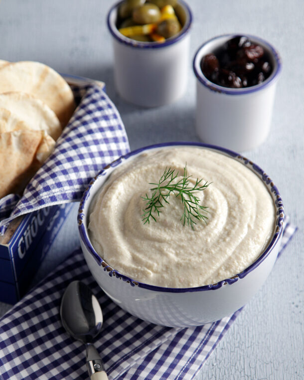

Taramas Recipe

Description
Παραδοσιακή, πεντανόστιμη, νηστίσιμη συνταγή για ταραμά.
Ingredients
- 120 γρ. ταραμάς λευκός
- 200 γρ. μπαγιάτικο ψωμί, χωρίς την κόρα, μουλιασμένο σε νερό και καλά στυμμένο
- 80 ml χυμός λεμονιού (ή λιγότερο αν δεν μας αρέσει πολύ το λεμόνι)
- 300 - 350 ml ελαιόλαδο
- 1 μικρό ξερό κρεμμύδι, τριμμένο
Steps
- Για να φτιάξουμε ταραμοσαλάτα, βάζουμε το κρεμμύδι σε ψιλό σουρωτήρι, το πιέζουμε να φύγουν όλα τα υγρά και το αδειάζουμε στον πολυκόφτη.
- Προσθέτουμε τον ταραμά, το ψωμί και το χυμό και χτυπάμε σε δυνατή ταχύτητα για 1 λεπτό.
- Χαμηλώνουμε την ταχύτητα και προσθέτουμε σταδιακά το λάδι. Αν το μείγμα γίνει πολύ πηχτό, αραιώνουμε με λίγο νερό και συνεχίζουμε το χτύπημα μέχρι να έχουμε μια κρέμα με την υφή μαγιονέζας.
Home